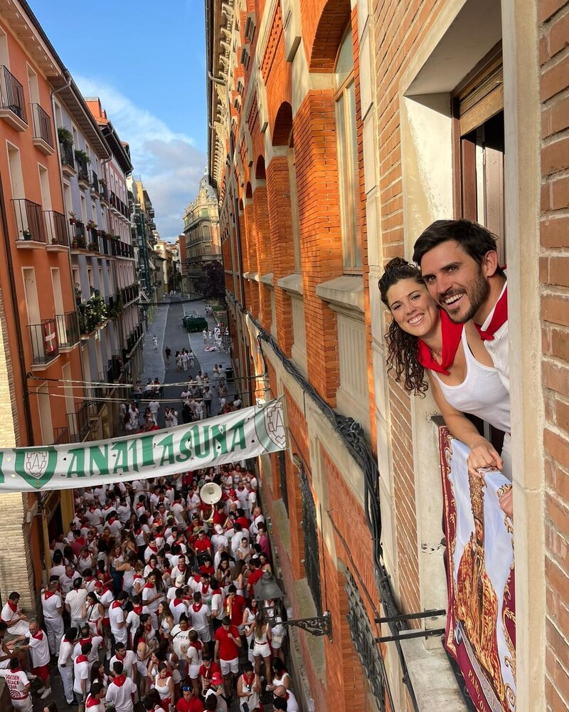

Qué hacer en San Fermín
Una guía completa con todos los planes, momentos y experiencias para vivir San Fermín de verdad.
Leer másSan Fermín no es solo una sucesión de actos, sino una combinación de momentos como el chupinazo, el encierro o la procesión, que cambian de ritmo a lo largo del día. Desde la intensidad de la mañana hasta la energía de la tarde o la excitación de la noche.
La mayoría de visitantes accede a la fiesta de forma espontánea, sin contexto ni planificación. Eso hace que muchas experiencias se queden a medio camino o dependan del azar.
Cuando se entiende la fiesta desde dentro, es posible conectar momentos, acceder a espacios concretos y construir una experiencia más completa, más fluida y más coherente con lo que buscas.
Hay muchas formas de acercarse a San Fermín:
La diferencia no está en cada momento aislado, sino en cómo se encadenan entre sí.
En la práctica, esto se traduce en una propuesta concreta con horarios, accesos y recomendaciones adaptadas a tu grupo.
Estas propuestas son solo una referencia de lo que se puede construir. Cada experiencia puede adaptarse o combinarse en función de lo que buscas.


Algunas experiencias se recuerdan por lo que ocurre. Otras, también por lo que te llevas de ellas.
Podemos integrar elementos personalizados dentro del plan: desde detalles sencillos hasta piezas pensadas para acompañar el momento.
Porque a veces, lo que parece pequeño es lo que más permanece.
Al tratarse de propuestas personalizadas, no hay un formato único ni un precio estándar. Cada experiencia se construye en función de los momentos incluidos, el tipo de acceso y el nivel de acompañamiento.
Trabajamos a partir de una idea inicial y definimos el presupuesto en función de las actividades incluidas y el número de personas. O ajustamos la experiencia al nivel de presupuesto deseado.
Aquí no se trata de elegir entre opciones cerradas, sino de entender qué te gustaría vivir y construirlo de forma coherente. Defines qué quieres vivir y nosotros estructuramos cómo hacerlo de la mejor manera posible.
Sin compromiso inicial. Solo cuando tenga sentido para ti.
San Fermín tiene muchas capas. La diferencia está en cómo accedes a ellas.
Muchas de estas experiencias forman parte de cómo hemos vivido siempre la fiesta.
Nuestro papel es ordenar, abrir y compartir ese acceso para que otros puedan vivirlo de una forma más completa, tal como trabajamos y explicamos en nuestro equipo.
No se trata de elegir una experiencia. Se trata de construirla contigo.

El guía marca mucho la diferencia.
Estas experiencias conectan con distintos momentos de la fiesta.
Puedes vivir el inicio con el Chupinazo, la intensidad del encierro o la emoción de la Procesión.
Porque San Fermín no es una experiencia única, sino una suma de momentos.